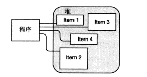
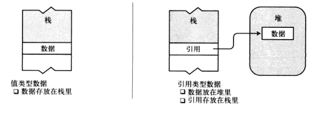
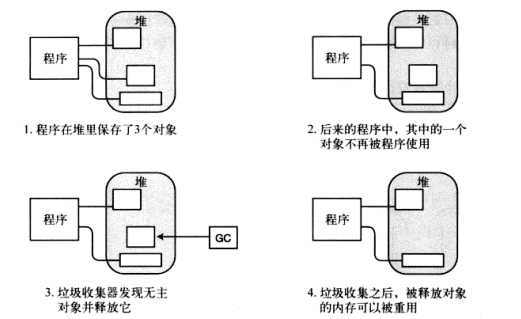
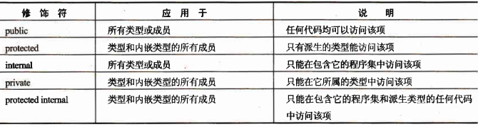
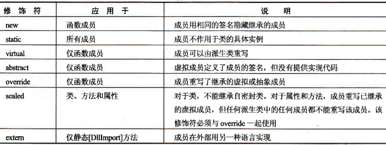

前言
C#学习2，面向对象+继承和泛型。（20190110）
C#中的面向对象编程（OOP编程）
- 类的字段和方法
字段的声明
访问修饰符 类型 字段名称;
方法的声明1
2
3访问修饰符 返回值类型 方法名称(参数){
//方法体
}
例如：
1 | class Customer{ |
当我们使用new关键字创建类的时候，就会调用构造方法。
我们一般会使用构造方法进行初始化数据的一些操作。
构造函数可以进行重载，跟普通函数重载是一样的规则。
注意：
当我们不写，任何构造函数的时候，编译器会提供给我们一个默认的无参的构造函数，但是如果我们定义了一个或者多个构造函数，编译器就不会再提供默认的构造函数。
- 属性的定义
属性的定义结构：
1 | public int MyIntProp{ |
（1）定义属性需要名字和类型
（2）属性包含两个块 get块和set块
（3）访问属性和访问字段一样，当取得属性的值的时候，就会调用属性中的get块，所以get块，类型需要一个返回值就是属性的类型；当我们去给属性设置值的时候，就会调用属性中的set块，我们可以在set块中通过value访问到我们设置的值。
- 通过属性来访问字段
习惯上把字段设置为私有的，这样外界不能修改字段的值，然后我们可以通过定义属性来设置和取得字段中的值。
1 | private int age; |
属性可以值只提供一个set块或者get块。
自动实现的属性
public int Age{get;set;}
编译器会自动创建private int age属性。匿名类型
我们创建变量（对象的时候），必须指定类型，其实我们也可以不去指定类型，这个就是匿名类型，我们可以使用var声明一个匿名类型。
使用var声明的匿名类型，当初始化的时候，这个变量的类型就被确定下来，并且以后不可以修改。var var1 = 34;
堆和栈
栈空间比较小，但是读取速度快
堆空间比较大，但是读取速度慢
栈的特征：
数据只能从栈的顶端插入和删除
把数据放入栈顶称为入栈（push）
从栈顶删除数据称为出栈（pop）
堆是一块内存区域，与栈不同，堆里的内存能够以任意顺序存入和移除。

- 值类型和引用类型
类型被分为两种：值类型(整数，bool struct char 小数)和引用类型（string 数组 自定义的类，内置的类）。
值类型只需要一段单独的内存，用于存储实际的数据，（单独定义的时候放在栈中）。
引用类型需要两段内存：
第一段存储实际的数据，它总是位于堆中。
第二段是一个引用，指向数据在堆中的存放位置。

GC Garbage Collector垃圾回收器
CLR的GC就是内存管理机制，我们写程序不需要关心内存的使用，因为这些都是CLR帮我们做了。

C#中的继承
- C#中的继承
（1）实现继承：
表示一个类型派生于一个基类型,它拥有该基类型的所有成员字段和函数。 在实现继承中,派生类型采用基类型的每个函数的实现代码,除非在派生类型的定义中指定重写某个函数的实现代码。 在需要给现有的类型添加功能,或许多相关的类型共享一组重要的公共功能时,这种类型的继承非常有用。
（2）接口继承：
表示一个类型只继承了函数的签名,没有继承任何实现代码。 在需要指定该类型具有某些可用的特性时,最好使用这种类型的继承。
（3）简化健壮代码的编写工作是开发C#的重要设计目标。因此,C#不支持多重实现继承。而C#允许类型派生自多个接口——多重接口继承。这说明,C#类可以派生自另一个类和任意多个接口。更准确地说, System.Object是一个公共的基类,所以每个C#(除了Object类之外)都有一个基类,还可以有任意多个基接口。
1 | //如果要声明派生自另一个类的一个类,就可以使用下面的语法: |
- 虚方法
1 | //把一个基类函数声明为virtual,就可以在任何派生类中重写该函数: |
我们在子类里面重写虚函数之后，不管在哪里调用都是调用重写之后的方法
隐藏方法
如果签名相同的方法在基类和派生类中都进行了声明，但是该方法没有分别声明为virtual和override，派生类就会隐藏基类方法。（要使用new关键字进行声明）1
2
3
4
5
6
7
8
9
10//基类
class MyBaseClass{
public int MyMethod(){
}
}
//派生类(在派生类中把基类同名的方法隐藏掉了)
class MyDerivedClass :MyBaseClass{
public new void MyMethod(){
}
}this和base关键字
this可以访问当前类中定义的字段,属性和方法，有没有this都可以访问，有this可以让IDE-VS编译器给出提示，另外当方法的参数跟字段重名的时候，使用this可以表明访问的是类中的字段，base可以调用父类中的公有方法和字段,有没有base都可以访问，但是加上base。IED工具会给出提示，把所有可以调用的字段和方法罗列出来方便选择。抽象类
C#允许把类和函数声明为 abstract。抽象类不能实例化,抽象类可以包含普通函数和抽象函数，抽象函数就是只有函数定义没有函数体。 显然,抽象函数本身也是虚拟的Virtual(只有函数定义，没有函数体实现)。
类是一个模板，那么抽象类就是一个不完整的模板，我们不能使用不完整的模板去构造对象。
abstract class Building{
public abstract decimal CalculateHeatingCost();
}密封类和密封方法
C#允许把类和方法声明为sealed。 对于类,这表示不能继承该类；对于方法表示不能重写该方法。
sealed FinalClass
{
// etc
}
什么时候使用 密封类和密封方法？
防止重写某些类导致代码混乱
商业原因派生类的构造函数
1 | //1,在子类中调用父类的默认构造函数（无参）（会先调用父类的，然后是子类的） |
修饰符
修饰符，用来类型或者成员的关键字。修饰符可以指定方法的可见性。

（1）private修饰字段和方法的时候，表示该字段或者方法能不能通过对象去访问，只有public的才可以通过对象访问，private（私有的）只能在类模板内部访问。
（2）protected保护的，当没有继承的时候，它的作用和private是一样的，当有继承的时候，protected表示可以被子类访问的字段或者方法。其他修饰符

static可以修饰字段或者方法，修饰字段的时候，表示这个字段是静态的数据，叫做静态字段或者静态属性，修饰方法的时候，叫做静态方法，或者静态函数，使用static修饰的成员，只能通过类名访问。定义和实现接口
1 | 定义接口(飞翔功能) |
定义一个接口在语法上跟定义一个抽象类完全相同，但不允许提供接口中任何成员的实现方式，一般情况下，接口只能包含方法，属性，索引器和事件的声明。
接口不能有构造函数，也不能有字段，接口也不允许运算符重载。
接口定义中不允许声明成员的修饰符，接口成员都是公有的
- 派生的接口
接口可以彼此继承，其方式和类的继承方式相同public interface A{
void Method1();
}
public interface B:A{
void Method2();
}
- 索引器
待研究
- 运算符重载
待研究
C#中的泛型
通过参数化类型来实现在同一份代码上操作多种数据类型。利用“参数化类型”将类型抽象化，从而实现灵活的复用。
- 集合类 列表List
1 | -1-,创建列表(列表可以存储任何类型的数据，在创建列表对象的时候首先要指定你要创建的这个列表要存储什么类型的)（泛型） |
- 泛型类定义
1 | 定义一个泛型类就是指的是，定义一个类，这个类中某些字段的类型是不确定的，这些类型可以在类构造的时候确定下来,举例: |
- 泛型方法
1 | 定义泛型方法就是定义一个方法，这个方法的参数的类型可以是不确定的，当调用这个方法的时候再去确定方法的参数的类型。 |